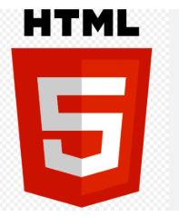
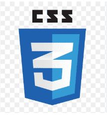
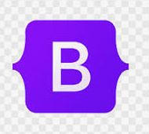
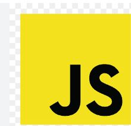

my skills

HtML

CSS

Bootstrap 5
Tailwind CSS

Javascript
SQL
Microsoft IIS
Cloud Computing
Github

WordPress
my education
2019 - 2022
front-end development
My Education :-
Graduated B.Sc-CS, in Mumbai
2022 - 2024
Working Experience
Professional ESolutions PVT.LTD
, India, Mumbai
2024 - 2025
Working Experience
Aurionpro Solutions Limited
, India ,Navi Mumbai